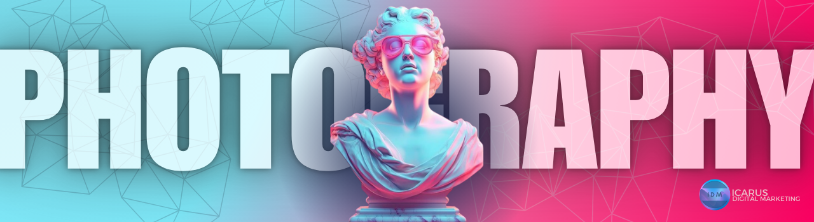
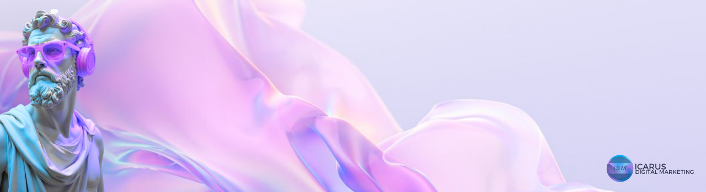

From Concept to Camera: Why Videography is a Game-Changer for Businesses
In the age of dynamic digital content, video has emerged as the king of engagement. With platforms like YouTube, Instagram, TikTok, and LinkedIn embracing video as their dominant medium, businesses can no longer afford to ignore its power. Videography has become an essential tool for storytelling, brand building, and audience connection, providing businesses with an unmatched ability to captivate their target market. From conceptualizing ideas to executing polished productions, videography has transformed the way businesses communicate, engage, and grow.
The Art of Storytelling Through Video
At its core, videography is storytelling in motion. A well-crafted video allows a business to convey its values, mission, and personality in a way that static images or written content simply cannot. Unlike text or photos, video combines visuals, sound, and motion to evoke emotions, build trust, and leave a lasting impression. For instance, a brand video showcasing your company’s journey, complete with interviews and behind-the-scenes footage, can resonate deeply with viewers, creating an emotional connection that encourages loyalty.
Beyond emotional resonance, storytelling through video has the power to simplify complex ideas. If your business offers intricate products or services, a short explainer video can break down technical jargon into digestible content for your audience. Animated elements, on-screen text, and voiceovers can work together to clarify your message, making it more accessible. This ability to distill complexity into simplicity is one of the many reasons video is so impactful for businesses. It doesn’t just tell a story—it brings it to life in a way that sticks with the viewer.
Unparalleled Audience Engagement
The average person’s attention span has significantly decreased in recent years, making it increasingly difficult to capture interest with traditional content. Video, however, is an exception. It’s inherently engaging, and platforms consistently report higher levels of interaction with video content compared to static posts. Videos are shared more frequently, viewed longer, and remembered better than other forms of media. For businesses, this means a higher chance of reaching and retaining their audience's attention.
Consider the role of social media algorithms in this dynamic. Platforms like Instagram and LinkedIn prioritize video content, pushing it to the forefront of users’ feeds. This preferential treatment means your video content is more likely to be seen by a wider audience. Furthermore, the interactivity of video—such as embedded calls-to-action, clickable links, or even live-streaming capabilities—encourages direct engagement with your brand, transforming passive viewers into active participants.

Building Credibility and Establishing Authority
One of the most significant advantages of professional videography is its ability to enhance credibility. High-quality videos exude professionalism and demonstrate that your business is serious about its image and messaging. Customers are far more likely to trust a business that invests in polished, professional visuals than one relying on shaky, low-resolution clips. Whether it’s a product demo, customer testimonial, or corporate introduction, a professionally shot video serves as a reflection of your company’s values and standards.
Additionally, videography allows businesses to position themselves as industry leaders. Educational videos, for example, can showcase your expertise in your field. Tutorials, webinars, or thought-leadership pieces are not only useful for your audience but also serve as evidence of your deep industry knowledge. By consistently delivering valuable, well-produced video content, your business can establish itself as a trusted authority, further cementing its reputation.
“ Most good programmers do programming not because they expect to get paid or get adulation by the public, but because it is fun to program. The joy of building something, of making it work, is a powerful drive. For many, it’s this passion that keeps them going, even when the challenges seem impossible.
- Linus Torvalds, creator of Linux and Git “
Enhancing SEO and Driving Traffic
Videography doesn’t just capture attention—it also drives results. Search engines love video content, and businesses that incorporate videos into their websites are more likely to rank higher in search results. This is partly because videos increase the time visitors spend on a page, signaling to search engines that the content is valuable. Additionally, when videos are optimized with relevant keywords, titles, and descriptions, they become powerful tools for driving organic traffic.
Platforms like YouTube double as search engines in their own right, offering businesses another opportunity to reach their audience. A well-optimized video can appear in search results not only on YouTube but also on Google, providing double the exposure. Beyond search rankings, video content can also increase click-through rates in email campaigns, landing pages, and advertisements, ultimately driving more traffic and conversions.

Capturing the Human Element
Videography goes beyond selling a product or service; it brings the human side of your business to the forefront. People want to connect with other people, not faceless entities. Videos that highlight the faces behind your brand—whether through team introductions, customer testimonials, or behind-the-scenes glimpses—help humanize your business and build trust. When viewers see the real people behind your company, they’re more likely to form emotional connections that translate into long-term loyalty.
Additionally, video allows for creativity and personalization in a way few other mediums can achieve. You can adapt your tone, style, and content to align with your brand’s personality, whether it’s humorous, serious, innovative, or traditional. This versatility ensures your business can craft unique messages tailored to different segments of your audience, making your content more relatable and impactful.
From Concept to Camera: A Strategic Investment
The process of creating a professional video may seem daunting, but the rewards far outweigh the effort. Starting with a clear concept, businesses can work with professional videographers to translate their vision into compelling visuals. From scripting and storyboarding to filming and editing, every step of the process is an opportunity to refine your message and ensure your video aligns with your brand goals.
Moreover, video content has incredible longevity and versatility. A single video can be repurposed across multiple channels—embedded on your website, shared on social media, included in email campaigns, or even played at events. This scalability ensures that your investment in videography continues to deliver value long after the initial launch.
It’s a Necessity
Videography is no longer optional in today’s digital landscape—it’s a necessity. From engaging audiences and building credibility to driving traffic and capturing the human element, video is a game-changer for businesses of all sizes. By investing in professional videography and thoughtfully creating content that resonates, businesses can elevate their digital marketing efforts and stay ahead in an increasingly competitive market. The journey from concept to camera is one of the most impactful steps your business can take toward long-term growth and success.